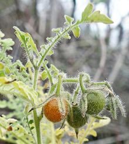

SAFARI
Users
- History & General Discussion
- Recipe Weights & Conversions - Tomato sizes & Fresh vs. Canned
- Working with Tomatoes - Buying, Storing, Peeling and Preparing
- Varieties
- Tomato Products - Canned Tomatoes, Sauces, etc.
History & General Discussion
Tomatoes are clearly a fruit, botanically. In culinary practice they are a vegetable (botany doesn't define "vegetable", so botanists can't complain about this). In 1893 the US Supreme Court ruled that tomatoes are a vegetable and the US Department of Agriculture classifies them as such.
The wild ancestor of domesticated tomatoes is native to Peru and Ecuador, They were grown as a crop in both areas by 500 BCE and probably a lot earlier.
The Spanish took tomatoes to the Philippines, from where they spread to Southeast Asia. They also took them to the Caribbean and to Spain, where cultivation began in about 1540. From there they spread to Italy. Some of these early varieties were yellow or orange, resulting in the name "golden apples" in several languages.
When I was in elementary school in New Jersey, our teachers told us Europeans were so ignorant they thought tomatoes were poisonous. They were far less ignorant than our teachers, immediately recognizing tomatoes as a close relative of the sometimes deadly Black Nightshade. That didn't stop them from eating them though. By 1544 they were described as edible and as "a new variety of eggplant" (another nightshade berry that was initially suspect). Americans were more ignorant, though, and didn't accept tomatoes as edible until about 1850.
Early tomato sauces were simmered for a long time because that's how Europeans were accustomed to detoxifying Black Nightshade berries for use in pies. Today we know the tomato berry is not toxic (though the rest of the plant is mildly toxic), and tomato sauces may be short cooked or even raw - unless you subscribe to Michio Kushi's Macrobiotics theories which hold them to be so toxic that I must have died decades ago from eating so many of them.
Tomatoes are plentiful now but flavor has been developed out of commercial varieties. While agricultural colleges and industrial farms concentrated on durability, mechanical picking and shelf life, without regard to flavor, the real culprit was appearance. In the '50s, a variety was found with a genetic trait that caused it to ripen evenly, rather than being green on top.
This even ripening trait was bred into almost all commercial tomato varieties. It has recently been found that this trait also suppresses sweetness and other flavoring traits. The only way to get really tasty tomatoes is to grow heirloom varieties yourself, or buy them from small growers at farmer's markets. Tomato developers are attempting to get the flavor back in without sacrificing even ripening, but say it's a very difficult task.
In Florida, powerful (read: "big political contributors") tomato growers have conspired to prevent competition from more flavorful Mexican tomatoes. Their politician pals have been happy to help with legislation (like packaging laws that guarantee ripe tomatoes will be crushed). To quote the head of a big Florida grower, "Who cares about flavor in tomatoes, they're always served with something else" (Wall Street Journal article back in the early '80s).
In the United States, California and Florida dominate the fresh tomato
market, split about even. In addition, California produces about 90% of
all tomatoes used for canning and processing, while Florida grows almost
none for that purpose. Mexico is the main competitor to both states, but
other states produce modest amounts, mostly for processing.
Varieties - Wild
All domesticated tomatoes belong to a single species, Solanum lycopersicum, a member of the Solanum branch of the Solanaceae or Nightshade Family. Wild tomatoes belong to different species, but cross breeding is still possible.
Current Tomato
- [Solanum pimpinellifolium]This wild tomato is considered to be the ancestor of the
domesticated tomato. It is native to Ecuador and Peru, but has been
introduced elsewhere. It's berries are edible and it is often grown as
an heirloom tomato, though still considered wild. It crosses freely
with domesticated tomatoes, and is very important to breeding tomato
cultivars, espeically for disease resistance, as the gene pool of the
domesticated tomato is rather shallow.
Photo by KENPEI distributed under license Creative
Commons
Attribution-ShareAlike v3.0 Unported.
Galapagos Tomato
- [Solanum cheesmaniae]
This wild tomato is native to the Galapagos Islands, where it
developed in isolation. Both its foliage and fruit are a paler color than
its nearest relative, the Current Tomato, but the fruit still tastes like
tomatoes, and is edible.
Photo by Kevin Gepford distributed under license Creative
Commons
Attribution-ShareAlike v4.0 International.
Varieties - Domesticated
Colors of Tomatoes
Many sizes and varieties of tomato are available in red, orange, yellow, sometimes purple, and of course green (both ripe and unripe). While other writers say color doesn't matter, I have compared the same size from the same farms and found yellow tomatoes sadly deficient in tomato flavor. Orange is better, but red is best. Use other colors for accent where flavor isn't critical.
Beefsteak
These large red tomatoes are often well over 1 pound each - the one in the picture was over a pound, over 4 inches in diameter, and displays the "navel" typical of these large tomatoes. Developed for the sandwich industry, beefsteaks makes large and often largely tasteless slices that hold together well. Small growers, however, can get excellent flavor with some beefsteak varieties. While excellent for sandwiches, they are less suitable for salads and general eating because they are not very juicy.
Campari Tomato
These small red tomatoes are usually about 1-5/8 inches in diameter, weigh about 1-1/8 ounces (34 gms), and may have two or three chambers. Camparis are very popular here in Southern California, often sold as clusters, but also loose. They are generally very juicy and sweet, with good tomato flavor. Buy them quite firm - though they will be a little softer than grape tomatoes should be. If at all mushy, their flavor and texture will be inferior. They are always unwaxed if sold as clusters, and may be unwaxed sold loose, so they should be eaten within a day or two.
Cherry Tomato
 These small red tomatoes range from about 1 to 1-1/2 inches in diameter.
Those in the photo ranged up to 1.2 inches and weighed about 2.3 to the
ounce (8 to 100gms). They are shown with a 6-1/4 ounce medium regular
tomato. Like Grape Tomatoes, they should be quite firm - if at all soft
their flavor and texture will be inferior.
These small red tomatoes range from about 1 to 1-1/2 inches in diameter.
Those in the photo ranged up to 1.2 inches and weighed about 2.3 to the
ounce (8 to 100gms). They are shown with a 6-1/4 ounce medium regular
tomato. Like Grape Tomatoes, they should be quite firm - if at all soft
their flavor and texture will be inferior.
For a while these were hailed as the savior of flavor in commercial
tomatoes, but the tomato industry quickly learned how to make flavorless
cherry tomatoes. They are still usually more flavorful than Mass Market
Tomatoes, but the Grape Tomato has overtaken them in the markets. They
are usually a two chamber fruit (as shown in photo), but sometimes three
chambers. For salads, I usually cut them once crosswise if small, and
the halves once lengthwise if large.
Cluster Tomatoes
I see these in four sizes, large, campari, cherry and grape. The campari and smaller sizes are generally quite good, but the larger ones (2-1/2 inches and larger) are almost always sadly disappointing, like other medium and large hothouse tomatoes.
The claim is that cluster tomatoes, left on the stem, will continue to
draw nourishment and will ripen better, but this amounts to yet another
hoax put over on the wannabe gourmets. Nothing can fix a hothouse
tomato. Stick to the small ones, or even good quality field grown
Mass Market tomatoes left out on the counter to ripen for about 4 days.
Clusters are not waxed, so they dehydrate quickly and you should plan
on using them up within 2 or 3 days.
Fresno Tomatoes
These are an example of what commercial tomatoes could be. They show up in some of the produce markets I shop at around September, but I suspect most go to the fancy restaurant trade. They are picked quite ripe, are large, thin skinned, juicy, sliceable and have excellent tomato flavor.
Of course, ripe, juicy and thin skinned means they cannot survive the
rough handling most commercial tomatoes suffer, and they may have various
cosmetic inperfections. The one to the left in the photo was 3-7/8 inches
diameter, 3 inches high and weighed 13-7/8 ounces. They were purchased
from a large multi-ethnic market in Los Angeles (Sunland) for 2016 US
$0.99 / pound.
Grape Tomatoes
- [Teardrop Tomatoes]These tomatoes have become much more common than Cherry Tomatoes here in Southern California. Buy them from a bin if you can, so you can check firmness. If they are at all soft, they will be inferior in flavor and texture. Most sold are red, but yellow and orange varieties are also available. Some varieties are exceptionally sweet and tasty, others are purely decorative, having almost no flavor. In general, yellow ones have the least flavor and red ones have the most, with orange ones in between.
These tomatoes are usually "two chambered" (see example to the left
in photo). I usually cut them in half crosswise for use in salads. They
are usually up to 1-1/4 inch long, 7/8 inch diameter and weigh about 6
to the ounce (20/100 grams). The medium regular tomato in the photo
weighed 6-1/4 ounces.
Green Tomatoes
These are unripe regular tomatoes (as distinct from Tomatillos, aka Mexican Green Tomatoes, which aren't really tomatoes). They are much less sweet than ripe tomatoes, but are are called for by some recipes. They are nearly impossible to find in chain supermarkets, so you'll have to grow them or get them from a local grower or farmer's market. The photo specimens were purchased from a market in Los Angeles (La Crescenta) that serves an Armenian community, for 2016 US $0.99 / pound. The largest weighed 5-1/2 ounces. The white blush to the right indicates this tomato was on the verge of ripening, as was the cut specimen.
Green tomatoes were thought to contain significant amounts of
solanine neurotoxins, but this is not well supported in medical
literature. They do contain the much less dangerous alkaloid tomatine,
but there are no reports of persons harmed.
Green Zebra Tomatoes
These are an example of some of the exotics being grown these days. These were of good, moderately tart flavor eaten as shown, but became a bit bland when riper. They were about 1-5/8 inches diameter and weighed just under one ounce each.
"Heirloom" Tomatoes
Many in this class are tomatoes that actually taste good. They come in various sizes and colors, are often irregular in shape and may have healed or partially healed cracks. They usually have odd names - the cut one in the photo is the popular Purple Cherokee, as is the one to the right. Heirlooms tend to be thin skinned and delicate, unsuited to high speed commerce, so you have to grow them yourself or buy them from a local grower or farmer's market. The organically grown photo specimens were purchased from a farmers market in Los Angeles (Montrose) for 2016 US $4.00 / pound.
Most "heirloom" tomatoes are not actually older varieties, but recently developed varieties that imitate them - and may or may not have been developed from older varieties. The main requirements are better flavor, odd colors, weird shapes and maybe a few healed cracks.
According to the Los Angeles Times (07-2004), supermarket growers had
noticed a market for "heirloom" tomatoes, and by 2006 some supermarkets
were selling Copia and Costoluto Genovese for 2006 US $7.00 / pound.
These are very striking in appearance, but are more suitable for tomato
sauces and tomato paste than for salads and general eating.
Heirloom Cherry Tomatoes
These curious tomatoes remind me of my Black Cobra chilis (chilis are related to tomatoes), which are black on the sun side when green and ripen to bright orange. These tomatoes, in size up to 1-1/2 inches diameter, are green with very dark purple, almost black and ripen to a purplish red. Unfortunately, while my chilis are wonderful in both flavor and heat, these tomatoes were quite disappointing - evidence that all "heirloom" tomatoes aren't better than regular. Ripe, they were mushy and bland - actually better eaten green.
Hothouse Tomatoes
Perfectly round, red and beautiful, they have almost every trace of flavor carefully removed so nothing will distract you from admiring their perfect appearance. The cut photo specimen had less ripe tomato flavor than the cut Mass Market Tomato shown below. The Market Tomato was ripened three days on the counter.
Supermarket chains post absurd prices for these, but their flavor
will not improve much even set out on the counter for a few days. That
is not to say they don't have uses - let them sit until they're really
soft and use them to pelt politicians. The photo specimens were
purchased from a big multi-ethnic market in Los Angeles (Sunland)
which always has them, probably the ones that weren't perfect enough
for Gelson's, and sells them for 2016 US $0.99 / pound.
Mass Market Tomatoes
- [Supermarket Tomatoes]Standard supermarket tomato varieties like "Red Rock" were developed by agricultural researchers to withstand machine picking, rough handling, long transportation, and still look pretty. They paid no attention to flavor, admitting they thought that would take care of itself. They've recently discovered that the genetic trait that causes even ripening, now incorporated in most market varieties, is also a trait that robs tomatoes of sweetness and flavor.
Due to consumer complaints, there is now (2012) significant development effort devoted to flavor, but the problem is complex and commercial results are expected to come slowly. I've seen some improvement here in California, and I see more varieties that don't ripen evenly, but they are still often picked too green and remain whitish inside. The situation may be much worse in Florida, where the president of a huge tomato grower made this statement to the Wall Street Journal, "Who cares if a tomato has any flavor, it's always served with something else".
Select good quality Market Tomatoes that are firm and without bruises or soft spots. If possible, sample them before buying many, different batches from the same market are often quite different. I've found that certain markets more often have good tasting ones than other markets - it depends on their sources. I buy them from a high volume produce store and select various stages of ripening for a steady supply.
Market Tomatoes should be quite juicy with big seed cavities full of liquid rather than solid with small or dry cavities. You're better off with a touch of green at the stem end than over-ripe, and avoid those with a uniform pale pink color. Set them out on a non-porous shelf or counter out of direct sunlight for a few days and you'll have tomatoes much better than expensive Hothouse Tomatoes.
Mass Market Tomatoes are always thinly coated with an edible wax to
give them better shelf life, and I've had some last over a month sitting
on the counter, until all the seeds inside were sprouted and trying to
burst through the skin. Tomato sprouts contain a small amount of toxin
to which some people are sensitive. I've sampled tomatoes with sprouted
seeds without ill effect, but the flavor will have both changed and
declined.
Mexican Green Tomato
- [Tomatillo]
Not a tomato but a Physalis, see Tomatillo.
Roma
- [Italian Plum Tomatoes]Romas are small elongated tomatoes, which may be pear shaped or heart shaped, typically 2-3/4 inches long and 1-1/4 inch diameter, weighing about 3 ounces. Generally they are red, but occasionally yellow or orange are available, but these have less intense tomato flavor. Roma tomatoes are often canned with a bit of Basil. They are preferred for Italian sauces and much other cooking because they have a high percentage of solids and little juice - which means they aren't that good for eating raw or for salads, but they still may be better than poorly ripened regular tomatoes.
California grown Romas (most sold in North America) have thick skins ane are quite sturdy ripe. This makes them durable for shipping, but they may be less tasty than those called for in European and African recipes. For such recipes, I usually ignore the demand for "Italian Plum Tomatoes" and use an equal weight of the best regular tomatoes.
To peel, give them a little longer in boiling water (1-1/2 minutes
total) than for most tomatoes. California Romas for the canning industry
are different, with thiner skins, and are picked fully ripe. This can
give canned tomatoes much better flavor for sauces and similar recipes.
California Central Valley canned Romas have proven consistently
superior to those imported from Italy.
Roso Bruno Tomato
- [Brown Tomato, Kumato (original name)]This is a patented variety grown by Dulcinea Farms in California. The San José Mercury News called them a "New Taste Sensation" and worth ever bit of the US 2006 $3.99 / pound they were selling for up there in Yuppyville. My local produce market in Los Angeles (Sunland) was selling them then for between $.69 and $.89/pound. Of course showing off to your friends that you paid just $3.99/pound for hyped tomatoes may be an important consideration in San José.
So how do they taste? Pretty decent for hothouse tomatoes, but there's
only so good hothouse tomatoes get. Leave good quality field grown Mass
Market Tomatoes on the counter to ripen for a few days and you can beat
the flavor. They have to be grown in hothouses because of the patent
nonsense. By now (2016) they seem to have disappeared from the general
market here in Southern California - I haven't seen one for years -
color it passé.
San Marzano Mini Plum Tomatoes
Grown specially for the Yuppie market, these have little to recommend
them except the prestigious Italian name and unusual shape. They are
drier, fleshier and less flavorful than regular California Grape or
Cherry Tomatoes. They are up to 1-7/8 inches long and 7/8 inch diameter
at the widest part, weighing a little over 2.2 to the ounce. The photo
specimens were hothouse grown in Canada and distributed by Trader Joe's
at 2016 US $4.46 / pound. The photo also includes a regular medium
tomato weighing 6-1/4 ounces, sold for $0.99 / pound, which tasted a
lot better.
Siberian Tomato
Seeds of this variety are reported to have been developed in Russia, and introduced to Canada in 1975, spreading from there. These tomatoes are not grown commercially, but seeds are widely available for home gardeners. They are valued for being a very early variety which can set fruit at as low as 38°F/3.3°C, and having a 50 day seedling to fruit time. They are not, however, much more frost tolerant than other tomato plants. They are a very early tomato in frost free parts of California. They are small, up to about 5 ounces and 2-1/2 inches diameter. Photo "borrowed" from Seed Savers Exchange, which has seeds for sale.
Strawberry Tomato
These tomatoes, most often sold "on the vine" at high prices, are larger than Cherry Tomatoes. Flavor is good, and they measure about 1.5 inches long and 1.3 inches diameter, weighing about 0.86 ounce each. The photo spcimens, grown in California, were purchased from a large multi-ethnic market in Los Angeles (Sunland) for 2018 US $3.54 / pound.
Tomatillo
- [Mexican Green Tomato]
Not a tomato but a Physalis, see Tomatillo.
"Vine Ripened"
 "Vine Ripened" is an industry term describing tomatoes that were not
dead green but rather had at least some pink blush when picked. The
photo examples can be considered "best case", they are often greener.
The tomatoes are then "ripened" in transportation by exposure to
ethylene gas. In years past packers would just toss gasoline soaked rags
into the truck to ripen the load, but in our current "over-regulated"
business environment they have to use pure ethylene gas.
"Vine Ripened" is an industry term describing tomatoes that were not
dead green but rather had at least some pink blush when picked. The
photo examples can be considered "best case", they are often greener.
The tomatoes are then "ripened" in transportation by exposure to
ethylene gas. In years past packers would just toss gasoline soaked rags
into the truck to ripen the load, but in our current "over-regulated"
business environment they have to use pure ethylene gas.
Tomato Products
Canned Tomatoes:
In some parts of North America, canned tomatoes are the only way you can get enough tomato flavor to make a decent tomato sauce. Even in better regions, or for home growers, it's needed in the off season. Canners can pick tomatoes when they are truly ripe, since they will be processed immediately - and they need to pick them fully ripe, because they compete only on flavor and price. One can looks pretty much like any other can. I have found some of the "no-name" brands can be as good as or better than the "big name" brands. Canned tomato products are usually in 14-1/2 ounce, 28 ounce and 5.5 pound cans.
These products contain only tomatoes, salt and occasionally a basil leaf or two. For making sauces, the farther down the list from Whole Canned Tomatoes you go, the more sauce a can will make, but the flavor will be increasingly darker and it will splatter more during cooking.
Tomato Juice:
Basically, this is tomatoes crushed and strained, then heated for the minimum time necessary for canning. UNFORTUNATELY most canned "tomato juice" sold today is reconstituted from tomato concentrate and is highly inferior to what we could buy back in the '70s and before. Sacramento brand, for instance, was top rated, but the brand was sold to a tomato growers cooperative that switched to concentrate. This ruined the product, which soon disappeared from the market.Whole Canned Tomatoes:
Whole Roma or other small ripe tomatoes, often with basil, are great for making the tastiest light tomato sauces and soups, but much of what's in the can is tomato juice. Never discard the juice as much of the flavor resides there. Use it along with the tomatoes, just let it simmer down a bit.Italian Canned Tomatoes:
Just about every writer of Italian recipes say you must use only imported Italian tomatoes. This is just blind prejudice. In every properly conducted blind tasting, California Central Valley canned tomatoes have proven superior, with Trader Joe's often at the top. Originally, this was blamed on Calcium Chloride, used as a firming agent in American canned tomatoes, but now the Italians use it too - and still end up with the bottom scores. My personal experience confirms the test results.Diced Tomatoes:
These are packed in juice just like whole tomatoes but will yield a little more sauce because the dice pack more densely.Kitchen Cut:
These are like diced, but packed in purée like Crushed Tomatoes.Crushed Tomatoes:
These have a higher sauce yield than diced but a heavier more "cooked" flavor, because they're packed in purée rather than juice. The purée has been "cooked down" to make it more dense, but it still makes a pretty good sauce.Tomato Purée:
This is similar to crushed tomatoes but completely smooth. Definitely preferable to Tomato Paste for sauce recipes that demand a concentrated tomato flavor. Brand matters here so select one that is light and flavorful. The harder to find 14oz cans are quite convenient.Tomato Paste:
For this, tomatoes have been cooked down until the tomato flavor is highly concentrated, but it also has a rather "cooked" flavor, sometimes even a burned flavor, so select a brand that has decent flavor. Paste is available in cans as small as 6 oz, and sometimes in squeeze tubes. The tube may be worthwhile if you don't use much (most recipes call for very small amounts).There's likely to be plenty left over from even a 6 oz can. If you'll be using it again reasonably soon, scoop the rest into a very small jar, put a layer of olive oil over it to suppress mold and store it in the refrigerator. For less frequent use, freeze it in the can, then remove the bottom of the can, warm the can some, push the slug of tomato paste out, and wrap it in plastic. Put back in the freezer. Later you can shave off just as much as you need.
Note that the original process in Italy was for the lady of the house to peel tomatoes, pound them well, and hand spread the pulp on wooden boards. These would be set out in the sun all day and brought in at night until sufficiently concentrated. This probably produced a better, less "cooked" tasting product, if you don't mind the flies.
Stewed Tomatoes:
These are sliced tomatoes (half way between whole and diced) with flavoring ingredients similar to those in a simple Tomato Sauce, but often way too much of it. They are packed in tomato juice. You're a lot better off starting with whole canned tomatoes, cutting them into chunks and adding your own seasonings.Tomato Sauce
 This product comes in many varieties. The simplest canned sauces
generally contain tomato purée, salt, onion powder, garlic powder,
citric acid, dehydrated bell pepper, and some spices, but have very
simple tomatoey flavors. You should always have a simple sauce like this
on hand, in small 8 ounce cans. It's a very handy recipe ingredient. My
usual brand is Faron "Spanish Style" (in in the photo). If I don't use
a whole can I freeze it the same as for tomato paste (see above).
Actually, I often use it in place of tomato paste, using three or four
times as much.
This product comes in many varieties. The simplest canned sauces
generally contain tomato purée, salt, onion powder, garlic powder,
citric acid, dehydrated bell pepper, and some spices, but have very
simple tomatoey flavors. You should always have a simple sauce like this
on hand, in small 8 ounce cans. It's a very handy recipe ingredient. My
usual brand is Faron "Spanish Style" (in in the photo). If I don't use
a whole can I freeze it the same as for tomato paste (see above).
Actually, I often use it in place of tomato paste, using three or four
times as much.
There are many much more complex "Gourmet" sauces on the market, but
I never use them. It's just way too easy to make better sauces starting
with canned tomatoes. Many claim to be "Italian", but are really
"Italian American", a cuisine despised by real Italians. Some of the
commercial sauces have an angry flavor, and most will splatter badly
when heated. "Gourmet" tomato sauces can contain just about anything,
so long as tomatoes are a major ingredient.
Sun Dried Tomatoes
Long a specialty of Italy, sun dried tomatoes were made for use during the off-season, and are now called for in many Mediterranean recipes. Originally, tomatoes were sliced and set out in the sun on slanted boards. The boards were brought in at night and put out the next morning until the tomatoes reached the right state of dryness. Then they would be packed in olive oil.
Today, more efficient methods are used but the basics are still the same - and some are now available without the olive oil. The photo specimen is from Trader Joe's - no country of origin, so it's pretty certain it wasn't Italy. Due to similarity with some other products, I suspect it was from Fresno. Ingred: Sun Dried Roma Tomatoes, Pure Olive Oil, Garlic, Herbs, Spices, Sulphur Dioxide (for color retention). In my opinion, the Garlic, Herbs and Spices pretty much overwhelm the tomato flavor in this product.
Dried Tomatoes
The photo specimens were sliced Roma tomatoes dried in a home type electric dehydrator at 114°F/46°C. They dried quite quickly, with 14 ounces of raw tomatoes, end slices discarded, becoming 5/8 ounces dried (4.5%). With a slightly leathery "snack chip" texture, they had good concentrated tomato flavor and bright red color.
Tomato Ketchup
- [Catsup; Kekap (Malay); Ketçap (Turk)]
Ketchup is held in high favor by children, because it has more sugar
than ice cream - it's sort of tomato flavored candy. By federal law,
if your product doesn't have that much sugar it can't be called
"ketchup". This was a ploy by the food industry to "standardize" the
product so they didn't have to reveal on the label that it was about
1/3 sugar (other ingredients are water, salt, vinegar, spices, and, yes,
tomatoes). For details see our
Tomato Ketchup page.
Health & Nutrition
Followers of Michio Kushi's Macrobiotic movement condemn tomatoes as dangerously toxic and highly destructive to the human organism (along with potatoes, eggplants, chilis and tropical fruit). Since I eat vast amounts of fresh tomatoes, (raw, with Sukang Iloco vinegar and a little salt), tomato sauces, and recipes with plenty of tomatoes in them, I should at least be on my deathbed by now.
Of course, you don't want to eat a lot of green tomatoes that aren't well cooked, or any of the foliage, as these contain toxins to which some people are quite sensitive.
Tomatoes contain the important antioxidant Licopene, and are by far the richest source of Licopene in the American diet (Gac fruit has a lot more, but try finding that at your local market). This antioxidant has been shown to contribute to resistance to some cancers (including prostate cancer), heart disease, osteoporosis and decline in cognitive function with age. Cooking tomatoes increases the amount and bio-availability of licopene.
Tomatoes also contain plenty of vitamin C and A, and are quite high in potassium - more than bananas. Potassium helps lower blood pressure and counters the ill effects of excessive sodium.
Green tomatoes, seed sprouts and foliage were said to contain significant amounts of the neurotoxin solanine, but this is not well supported by medical literature. I've eaten modest amounts of green tomatoes raw without any ill effects.